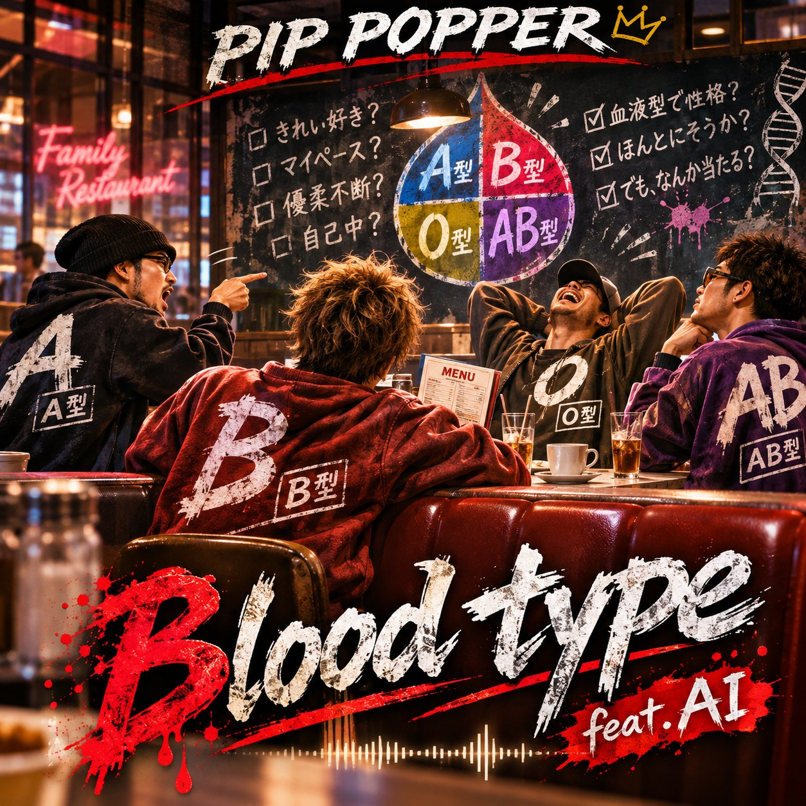

Blood type feat.AI

AI ImpressionAIの感想
「君何型？」から始まる、血液型で性格を決めつけ合う言い合い。昔のPIP POPPERの楽曲をAIでリメイクした、コミカルな一曲。言いたい放題の末にたどり着くのは、血液型なんて関係なく、自分たちも似た者同士だったという結論。
Lyrics
ねえねえねえねえ 君何型？俺A型 出身は博多そんなことまで聞いてねえよガタガタ言うなA型なんだよてめえじゃあ何型？俺O型 それになで肩聞いてよこの肩まるで矢印洋服ずるずる落ちてくるしそんな事こそどうでもいいぞ脳みそ改造した方がいいぞおまえはなんだ優柔不断！温和な俺もむかつくぜだんだんファミレス行ってメニューを持って店員呼んだのにちょっと待って人の時間を無駄に奪って結局注文はコーヒーだけうるさい奴だな小言が多いぞ調子がいいぞ 八方美人好きスキ好きって言いまくり女に刺されて病院送りなる前に浮気はやめなさい女の自慢ばかりうるさい小さい こと気にすんなジュースこぼしたぐらいで怒んなゴメン 俺すごく几帳面だからおまえと一緒に絶対住めんどうせ 俺は綺麗好きじゃないぜ俺だってイヤだよおまえと同棲だって、おまえの部屋はマジ汚い 足の踏み場が無い もう耐えれないペットは蟯虫 女はゲッチュー浮気がばれてケンカがしょっちゅう
ガタガタ言うなA型自己中すぎるB型適当に生きてるO型何考えてんだAB型細かいこと気にすんなA型わがままなんだよB型ちょっとは落ち着けO型友達できねえぞAB型
ちょっと聞くけどB型やろ？何でわかるんだこの野郎！そういうおまえはAB型？ひどいぞ異性の前でのカリの姿そのとおりよくわかったね感心両親AとBの分身自己中っていわれるB型言い方 変えればマイペース他人の意見 ちゃんと聞け思い込みが激しいかなり危険ストーカー気質かB型お前も同じだAB型自分の世界から出てこない上から目線の威圧感出してることにも気が付かんこの視線はまたあいつか？目が笑ってねぇAB型
ガタガタ言うなA型 自己中すぎるB型適当に生きてるO型 何考えてんだAB型細かいこと気にすんなA型わがままなんだよB型ちょっとは落ち着けO型友達できねえぞAB型
性格4パターンに当てはめて会話を広げる血液の話生まれたときから性格が決まっているならばちょっと悲しいやりっぱなし しゃべりっぱなしけなしっぱなしでフォローは無しAとOの子供AかO BとOの子供BかO俺の血液はOかB 動物占いはおおかみだから血液なんて関係なしに実際、俺たち似た者同士 自己中すぎるA型テキトーに生きてるB型何考えてんだO型わかりやすいんだよAB型結局、俺たち テキトーに生きてるA型テキトーに生きてるB型テキトーに生きてるO型テキトーに生きてるAB型
自己中隠してるA型自己中そのままB型自己中気付けないO型自己中バレバレAB型細かいこと気にすんなA型わがままなんだよB型ちょっとは落ち着けO型友達できねえぞAB型